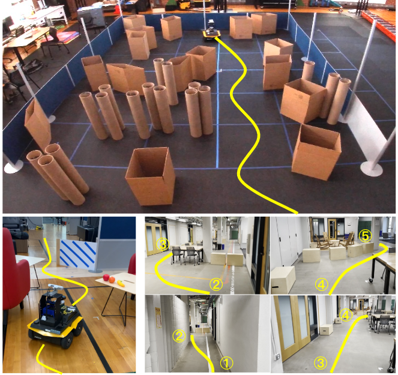
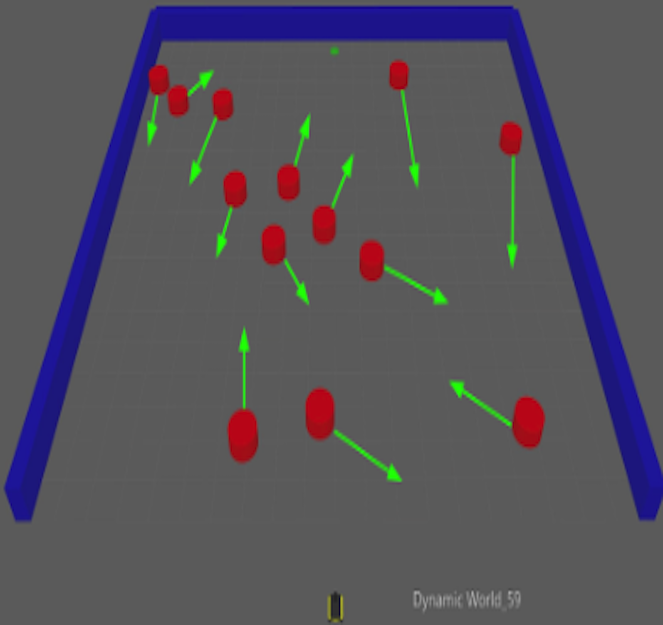
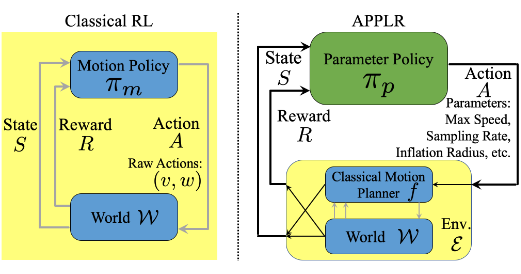

|
Previously I was a research scientist in the Complexity Group in the Nuclear Engineering department at UC Berkeley and worked with Bethany Goldblum and Chris Stewart. During my undergraduate studies at UT Austin, I was advised by Xuesu Xiao and Peter Stone and worked on autonomous robot navigation. |
{kind=link}
|
|
|  |
Zifan Xu, Bo Liu, Xuesu Xiao, Anirudh Nair, Peter Stone IEEE International Conference on Robotics and Automation (ICRA), 2023 Paper In this paper, we identify four major desiderata of applying deep RL approaches for autonomous navigation: (D1) reasoning under uncertainty, (D2) safety, (D3) learning from limited trial-and-error data, and (D4) generalization to diverse and novel environments. Then, we explore four major classes of learning techniques with the purpose of achieving one or more of the four desiderata: memory-based neural network architectures (D1), safe RL (D2), model-based RL (D2, D3), and domain randomization (D4). |
|  |
Anirudh Nair, Fulin Jiang, Kang Hou, Zifan Xu , Shuozhe Li, Xuesu Xiao, Peter Stone IEEE International Symposium on Safety, Security, and Rescue Robotics (SSRR), 2022 Paper / Website / Dataset / bibtex In this paper, we present a simulation testbed, DynaBARN, to evaluate a robot navigation system's ability to navigate in environments with obstacles with different motion profiles, which are systematically generated by a set of difficulty metrics. |

|
Haresh Karnan, Anirudh Nair, Xuesu Xiao, Garrett Warnell, Soeren Pirk, Alexander Toshev, Justin Hart, Joydeep Biswas, Peter Stone IEEE Robotics and Automation Letters (IEEE RA-L) , 2022 Paper / Website / Video / Poster / Dataset / bibtex We introduce a large-scale, first-person-view dataset of socially compliant robot navigation demonstrations. SCAND consists of 138 trajectories, 25 miles of socially compliant navigation demonstrations collected on 2 robots by 4 human demonstrators within the UT Austin campus. |
|  |
Zifan Xu, Gauraang Dhamankar, Anirudh Nair, Xuesu Xiao, Garrett Warnell, Bo Liu, Zizhao Wang, Peter Stone IEEE International Conference on Robotics and Automation (ICRA), 2021 Paper / Website / Video / bibtex In this paper, we introduce APPLR, Adaptive Planner Parameter Learning from Reinforcement, which allows existing navigation systems to adapt to new scenarios by using a parameter selection scheme discovered via reinforcement learning (RL) in a wide variety of simulation environments. |
|
Yep... it's another Jon Barron website. |